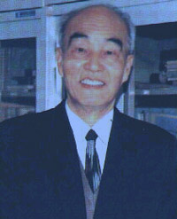

陆钟武 中国工程院院士

陆钟武，男，汉族，1929年10月生，上海市人。1941-1946年就读于重庆南开中学，1950年毕业于大同大学化学工程系（前三年在中央大学），1953年毕业于东北工学院冶金炉专业研究生班（前两年在哈尔滨工业大学）。1982年晋升为教授，1984年至1991年任东北工学院院长，1986年任冶金热能工程学科博士生导师。1997年当选中国工程院院士。曾兼任国务院学位委员会学科评议组委员、中国金属学会副理事长。现兼任中国环境咨询委员会委员、辽宁省环境科学学会理事长、美国《工业生态学》杂志编委。
领导建立了国内第一个冶金炉专业和冶金热能工程博士点。率先参照势流理论研究竖炉气体力学；导出的气体折射定理比德国耶夏教授早10年。利用高炉炉身静压，成功地判断了炉内的主要变迁。“竖炉散料层内的气体运动”一文的大部分内容被国内炼铁学教科书引用。导出了火焰炉热工特性的基本方程式，提出了经验公式，成功地用于炉子节能改造。改造后的加热炉，热效率达到国际先进水平。同乌克兰古宾斯基教授合著了《火焰炉理论》（俄文）一书。
提出了“载能体”概念、能耗的e－p分析法、基准物流图分析法，引入了系统工程方法，创立了冶金工业系统节能理论和技术。原冶金工业部确认系统节能是深挖潜力的主要方向。在国内若干冶金企业开展系统节能研究工作，均取得巨大经济效益。
率先提出，我国钢铁工业废钢资源严重短缺的主要原因，是钢产量持续高速增长。当前不可盲目提倡建设电炉钢厂的论点，已得到国内钢铁界同行的认同。率先得出了产品产量的变化对资源、环境效率有重大影响等结论。用穿越“环境高山”的比喻，阐明了新型工业化道路在环境与发展二者之间关系方面的基本特征；强调了GDP的年增长率与单位GDP环境负荷年下降率，这两个参数的匹配关系。提出了物质流分析的“跟踪观察法”，成功地用于我国几种金属循环的研究工作。
出版著作13部，发表论文200余篇。获国家科技进步二等奖、光华工程科技奖、乌克兰雅罗斯拉夫智慧奖，以及全国模范教师、辽宁省优秀专家等称号。
任院长期间，贯彻教学、科研“两个中心”的办学思想，并获准试办研究生院。主持制定了学院2000年的发展纲要，提出办学“六大要素”的概念。确立既为冶金工业服务，又为地方经济服务的方针。积极推进国际学术交流，借鉴国内外院校办学经验。提出创办科技开发区和建设“大学科学园”的建议，被沈阳市政府采纳实施。